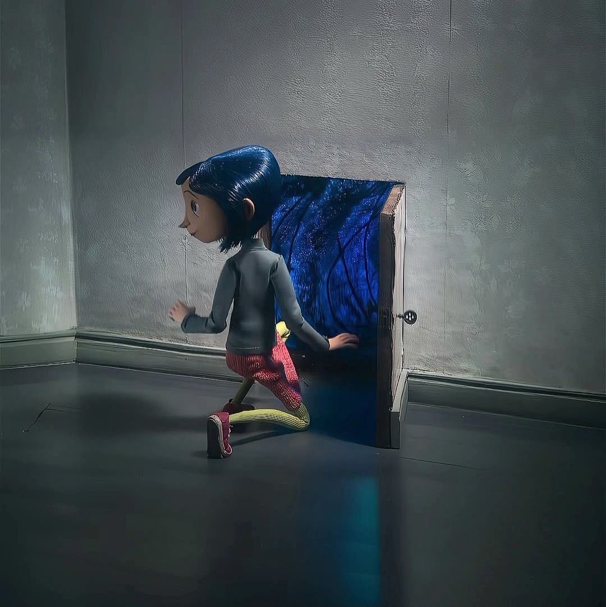

A House With Many Doors
Coraline Jones has just moved into the Pink Palace Apartments with her parents, who are too busy to pay her much attention. Bored and curious, she explores the old house and finds a small door bricked up behind the wallpaper.
One night the door opens onto a tunnel that leads to another version of her life — brighter, kinder, and not quite right. Everyone there has buttons for eyes, and the Other Mother is not willing to let Coraline leave.
